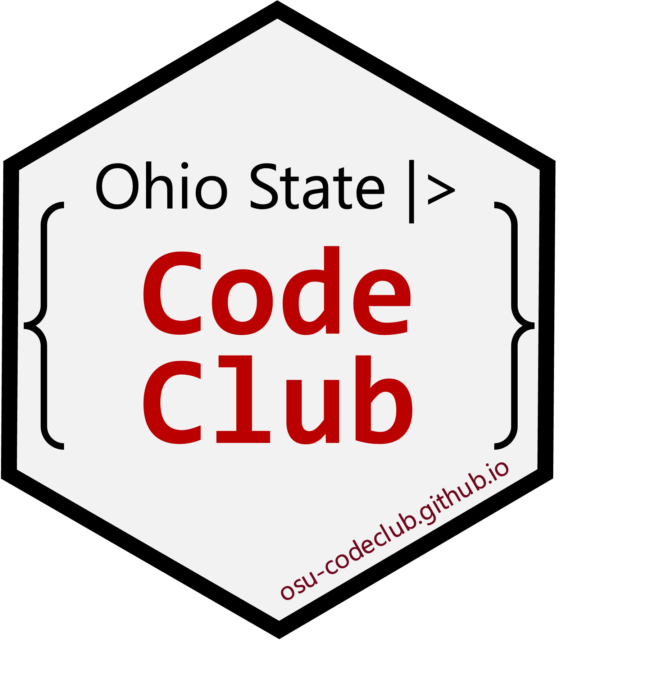

Schedule for Code Club

Code Club will restart for the 2024 fall semester on August 26th and will be held on Mondays from 4-5 pm via Zoom and with in-person locations in Columbus and Wooster.
If you sign up using this Google form, we will add you to our mailing list and keep you up-to-date!
For an overview of all previous Code Club sessions, including from previous semesters, see the Previous sessions page.
| Session | Date | Presenter | Link |
|---|---|---|---|
| S08E03 | Sept 16 | Jelmer | Data wrangling 03: Counting and summarzing by group |
| S08E04 | Sept 23 | Horacio | Data wrangling 04: Merging/joining data frames |
| S08E05 | Sept 30 | Horacio | Data wrangling 05: Pivoting with pivot_longer() |
| S08E06 | Oct 7 | Horacio | Data wrangling 06: Pivoting with pivot_wider() |
| S08E07 | Oct 14 | Jelmer | Reproducibility 01: File and project management and organization |
| S08E08 | Oct 21 | Horacio | Reproducibility 02: Quarto 1 |
| S08E09 | Oct 28 | Horacio/Jess | Reproducibility 03: Quarto 2 |
| S08E10 | Nov 4 | Jess | Reproducibility 04: Git 1 |
| S08E11 | Nov 11 | Jess | Reproducibility 05: Git 2 |
| S08E12 | Nov 18 | Jelmer | Reproducibility 06: RStudio at OSC and R version/package management |
| – | Nov 25 | – | No Code Club (short week of Thanksgiving) |
| S08E13 | Dec 2 | Everyone | Putting it together |